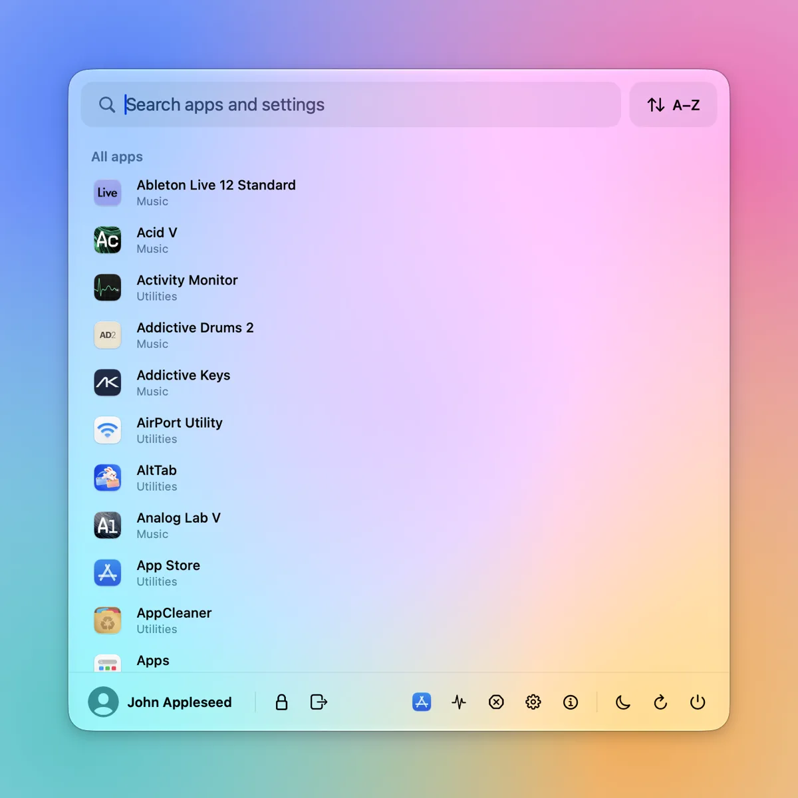

Un menú Inicio para tu Mac, a una tecla de distancia.
macOS Start Menu (un «menú Inicio» para macOS) es un lanzador de apps gratuito que trae el menú Inicio de Windows al Mac. Se abre un panel justo debajo de la barra de menús, con el campo de búsqueda ya activo: apps, carpetas y Ajustes del Sistema, nunca los documentos, archivos comprimidos o cachés que desentierra Spotlight. Ahora que Launchpad ha desaparecido en macOS Tahoe, es la forma más rápida de llegar a cualquier app.
Pulsa Comando
Pulsa y suelta ⌘ sola, como la tecla Windows. Los atajos como ⌘C siguen funcionando igual.
Búsqueda instantánea
Al escribir, ordena tus apps y sugiere los paneles de Ajustes del Sistema que coinciden, por su nombre en español o en inglés. La interfaz está en español y los nombres de apps y carpetas siguen el idioma de tu Mac.
Ordena a tu manera
A–Z, usadas recientemente, más usadas o por categoría, en cuadrícula o en lista.
Controles a mano
Bloquear, cerrar sesión, reposo, reiniciar y apagar, además de App Store, Monitor de Actividad y Forzar salida.
Desinstalación limpia
Haz clic derecho en una app para trasladarla a la papelera junto con las preferencias y cachés que ha dejado.
Oculta lo que sobra
Las apps del sistema no se pueden eliminar, pero puedes ocultar las que nunca usas.
Apps y ajustes, juntos.
Escribe unas pocas letras: primero aparecen las apps que coinciden y después los paneles de Ajustes del Sistema relacionados.
- Búsqueda tolerante: el inicio de una palabra, las iniciales o una errata bastan para encontrar la app.
- Ajustes por su significado: «pantallas», «wifi» o «sonido» abren el panel adecuado.
- Teclado ante todo: flechas para moverte, Retorno para abrir, Escape para cerrar.

Liquid Glass o Clásico.
Diseñado con el Liquid Glass nativo de macOS Tahoe. ¿Prefieres algo más plano? Cambia de estilo desde el menú de orden.


Atajos de teclado
Todo funciona desde el teclado.
| ⌘ sola | Abrir o cerrar el menú |
| Escribir | Buscar apps y ajustes |
| ←→↑↓ | Moverse por los resultados |
| ↩ | Abrir la selección |
| esc | Cerrar |
| ⌘Q con el menú abierto | Salir de Start Menu |
Preguntas frecuentes
¿Cómo tener un menú Inicio en Mac?
Instala macOS Start Menu, autorízalo en Privacidad y seguridad › Accesibilidad y pulsa la tecla ⌘ Comando sola. Se abre un menú Inicio al estilo de Windows debajo de la barra de menús, con todas tus apps, un campo de búsqueda y los botones de apagado.
¿Es una alternativa a Launchpad para macOS Tahoe?
Sí. macOS 26 Tahoe sustituyó Launchpad por la vista Apps. macOS Start Menu te ofrece una cuadrícula o lista rápida de todas tus apps, pensada para el teclado, ordenada de la A a la Z, por uso reciente, por las más usadas o por categoría.
¿Por qué Spotlight muestra archivos cuando solo quiero apps?
Spotlight oculta las categorías que desactivas, pero los archivos que no sabe clasificar (recursos de juegos, archivos comprimidos, cachés) siguen apareciendo. Start Menu lee directamente tus carpetas de apps, así que solo muestra apps, paneles de Ajustes del Sistema y tus carpetas principales.
¿Pulsar ⌘ interfiere con los atajos de teclado?
No. El menú solo se abre cuando ⌘ se pulsa y se suelta sola en menos de medio segundo. ⌘C, ⌘V y el resto de atajos funcionan como siempre.
¿macOS Start Menu es gratis?
Sí, se descarga gratis. El código fuente está en GitHub.
¿Qué Mac son compatibles?
Los Mac con chip de Apple con macOS 26 Tahoe o posterior.
Instalar macOS Start Menu
Start Menu no está notarizada por Apple, así que macOS te pide confirmar la primera apertura.
Descarga y descomprime
Start-Menu.zip y mueve Start Menu.app a tu carpeta Aplicaciones.
Permite la primera apertura
Abre la app. Cuando macOS la bloquee, ve a Ajustes del Sistema › Privacidad y seguridad y haz clic en Abrir igualmente.
Concede acceso de Accesibilidad
Activa Start Menu en Privacidad y seguridad › Accesibilidad. Es necesario para detectar la tecla ⌘ en cualquier lugar.
O instálala con Homebrew:
brew tap corentin-gautier/tap
brew trust --cask corentin-gautier/tap/macos-start-menu
brew install --cask corentin-gautier/tap/macos-start-menuO compílala desde el código fuente (Xcode o las Command Line Tools):
git clone https://github.com/corentin-gautier/macos-start-menu.git
cd macos-start-menu
scripts/setup-signing.sh # una vez: certificado de firma local
scripts/install.sh # compila, instala y abre al iniciar sesión